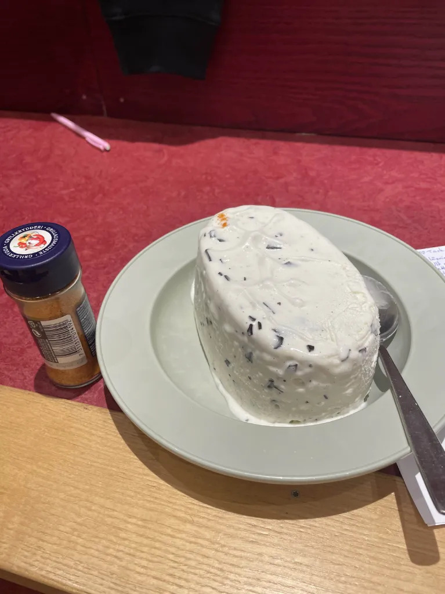
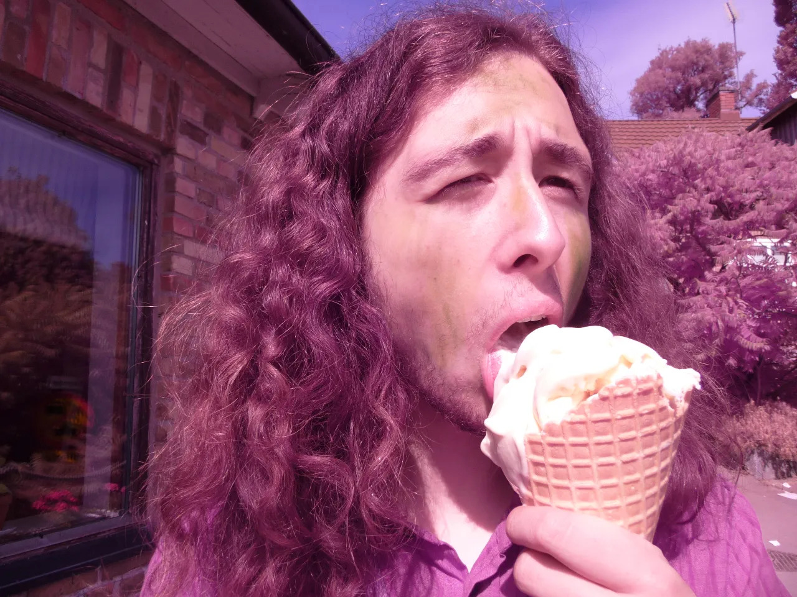

glassreceptet
gillar du glass?? ja? glas, såhärlagarduglass
ellerOmDuHatarGlas

glass, serveringsförslag
ingredienser:
- mjölk
- vatten
- socker
- 1.2 gabbillioner p-piller
- grön färg
hurdulagargalss:
- häll i mjöl med vatten
- jäll i resten FÖRUTOM p-pillrerna
- häll i socker
- häll i 1.2 gabbillioner p-piller
- grön färg
klar!!!
plz enjoy med astronomisk ungdomon content
om du vill uppleva det så jakobianskt som det går, snälla släng glassen från en våning upp

bild på jakob med glass, mums. (serveringsförslag) (inte den glass du kmr göra lulllulullululululullululul)